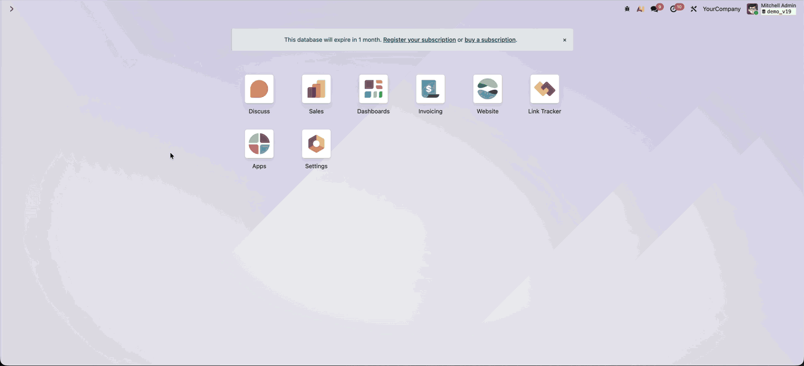
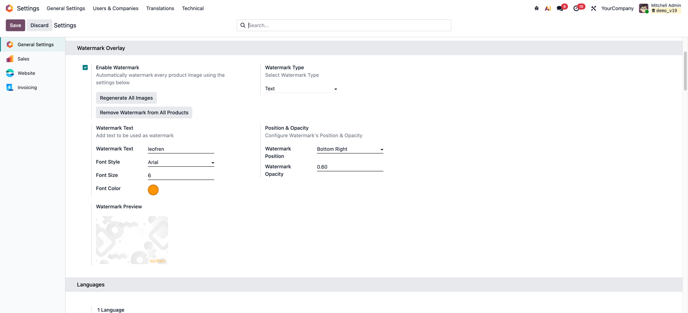
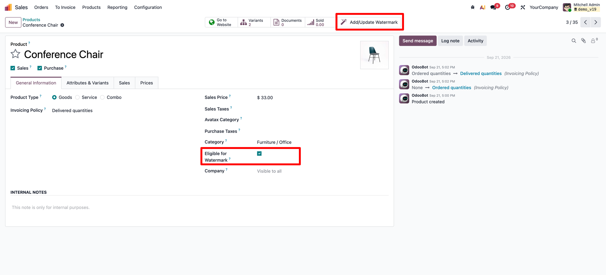
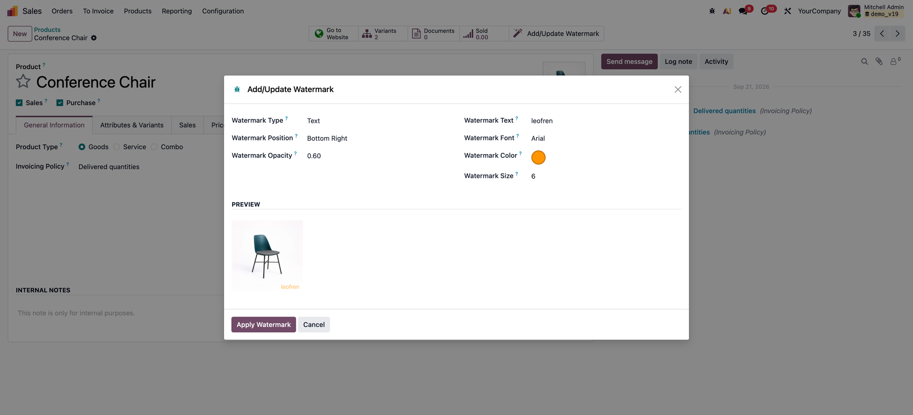
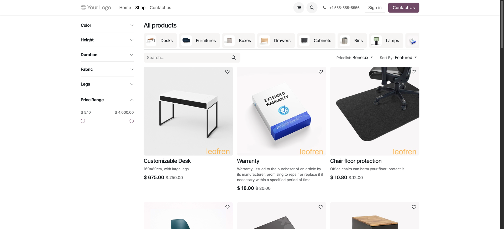

Leofren Technologies · Product Images
Put your logo or a line of text on product images, automatically on every new upload or one product at a time. The original is always kept, so nothing is ever lost.
Eligible for Watermark is off by default, so only the products you tick are branded.
Remove Watermark restores the untouched photo in one click, and watermarks never stack.
Large catalogs are processed in the background, so you keep working while it runs.
Note on storage: to make every watermark reversible, the module keeps a copy of each original image in a separate field, so watermarked products use more disk space on your server. Only watermarked products store this extra copy, and products you leave unwatermarked use no extra space.

Three steps, and you choose exactly which products take part.
In Settings, pick a logo or text, its position, size and opacity, with a live preview.

Tick Eligible for Watermark. New photos are watermarked automatically, and Regenerate All Images backfills existing ones.

Add/Update Watermark gives one product its own watermark, with a live preview.

Your eCommerce site shows the watermarked images automatically, with no theme changes.


Watermarks the Extra Product Media gallery on your product pages too.
Company-wide defaults, per-product control, and support for real catalogs.
Yes. Shop pages, product pages and the zoom all show the watermarked image. For the Extra Product Media gallery, add the free Website Sale companion described above.
Yes — it works with both Odoo Enterprise (on-premise and Odoo.sh) and Community. Odoo Online (cloud) does not allow installing third-party apps, so this module can't be installed there.
Regenerate All Images runs as a background job that works through your products in batches and saves its progress as it goes, so you can keep working while it runs and it picks up where it left off if it's interrupted.
Yes. Each company keeps its own watermark logo, and each product uses the logo of the company it belongs to (products shared between companies use the current company's logo). The other settings — text, position, size and opacity — are shared by all companies.
Yes, get in touch and we'll scope a customization for your use case.
Product Image Watermark Overlay is free to install. Reach out any time and we'll help you get set up.
contact@leofren.com